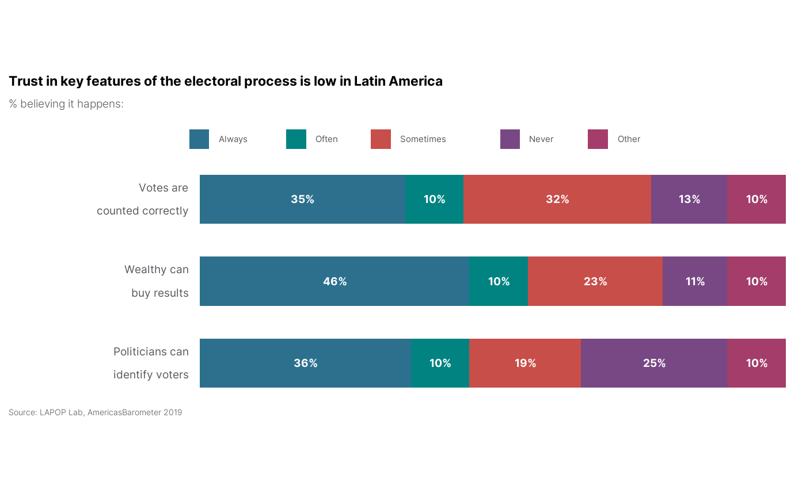

LAPOP Stacked Bar Graphs
lapop_stack.RdThis function shows a stacked bar graph using LAPOP formatting.
Usage
lapop_stack(
data,
outcome_var = data$prop,
prop_labels = data$proplabel,
var_labels = data$varlabel,
value_labels = data$vallabel,
xvar = NULL,
lang = "en",
main_title = "",
subtitle = "",
source_info = "LAPOP",
rev_values = FALSE,
rev_variables = FALSE,
hide_small_values = TRUE,
order_bars = FALSE,
subtitle_h_just = 0,
fixed_aspect_ratio = TRUE,
legendnrow = 1,
color_scheme = c("#2D708E", "#008381", "#C74E49", "#784885", "#a43d6a", "#202020")
)Arguments
- data
Data Frame. Dataset to be used for analysis. The data frame should have columns titled varlabel (name(s)/label(s) of variable(s) of interest; character), vallabel (names/labels of values for each variable; character), prop (outcome variable value; numeric), and proplabel (text of outcome variable value; character). Default: None (must be provided).
- outcome_var, prop_labels, var_labels, value_labels
Numeric, character, character, character. Each component of the data to be plotted can be manually specified in case the default columns in the data frame should not be used (if, for example, the values for a given variable were altered and stored in a new column).
- xvar
Character. Column name to group the plots by. This should match a column name in the dataset. Default: NULL (no grouping).
- lang
Character. Changes default subtitle text and source info to either Spanish or English. Will not translate input text, such as main title or variable labels. Takes either "en" (English) or "es" (Spanish). Default: "en".
- main_title
Character. Title of graph. Default: None.
- subtitle
Character. Describes the values/data shown in the graph, e.g., "Percent who support...". Default: None.
- source_info
Character. Information on dataset used (country, years, version, etc.), which is added to the end of "Source: " in the bottom-left corner of the graph. Default: LAPOP ("Source: LAPOP Lab" will be printed).
- rev_values
Logical. Should the order of the values for each variable be reversed? Default: FALSE.
- rev_variables
Logical. Should the order of the variables be reversed? Default: FALSE.
- hide_small_values
Logical. Should labels for categories with less than 5 percent be hidden? Default: TRUE.
- order_bars
Logical. Should categories be placed in descending order for each bar? Default: FALSE. showing the distributions of multiple categorical variables.
- subtitle_h_just
Numeric. Move the subtitle/legend text left (negative numbers) or right (positive numbers). Ranges from -100 to 100. Default: 0.
- fixed_aspect_ratio
Logical. Should the aspect ratio be set to a specific value (0.35)? This prevents bars from stretching vertically to fit the plot area. Set to false when you have a large number of bars (> 10). Default: TRUE.
- legendnrow
Numeric. How many rows for legend labels. Default: 1.
- color_scheme
Character. Color of data bars for each value. Allows up to 6 values. Takes hex numbers, beginning with "#". Default: c("#2D708E", "#008381", "#C74E49", "#784885", "#a43d6a","#202020") (navy blue, turquoise, teal, green, sap green, pea soup).
Author
Luke Plutowski, luke.plutowski@vanderbilt.edu & Robert Vidigal, robert.vidigal@vanderbilt.edu
Examples
# \donttest{
df <- data.frame(varlabel = c(rep("Politicians can\nidentify voters", 5),
rep("Wealthy can\nbuy results", 5),
rep("Votes are\ncounted correctly", 5)),
vallabel = rep(c("Always", "Often", "Sometimes",
"Never", "Other"), 3),
prop = c(36, 10, 19, 25, 10, 46, 10, 23, 11, 10, 35,
10, 32, 13, 10),
proplabel = c("36%", "10%", "19%", "25%", "10%", "46%",
"10%", "23%", "11%", "10%", "35%", "10%",
"32%", "13%", "10%"))
require(lapop); lapop_fonts()
#> LAPOP fonts loaded successfully: Inter, Roboto, and Nunito (regular and light).
lapop_stack(df,
main_title = "Trust in key features of the electoral process is low in Latin America",
subtitle = "% believing it happens:",
source_info = "Source: LAPOP Lab, AmericasBarometer 2019")

# }